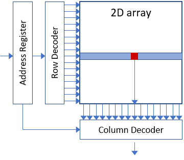
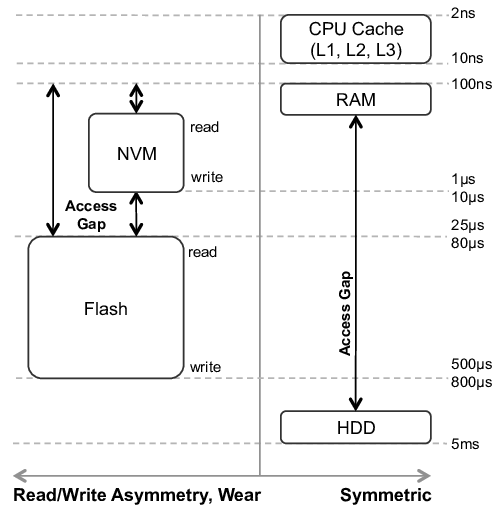
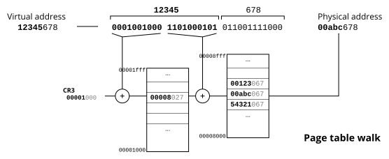
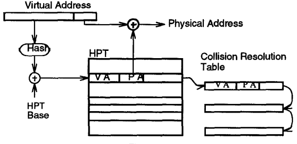
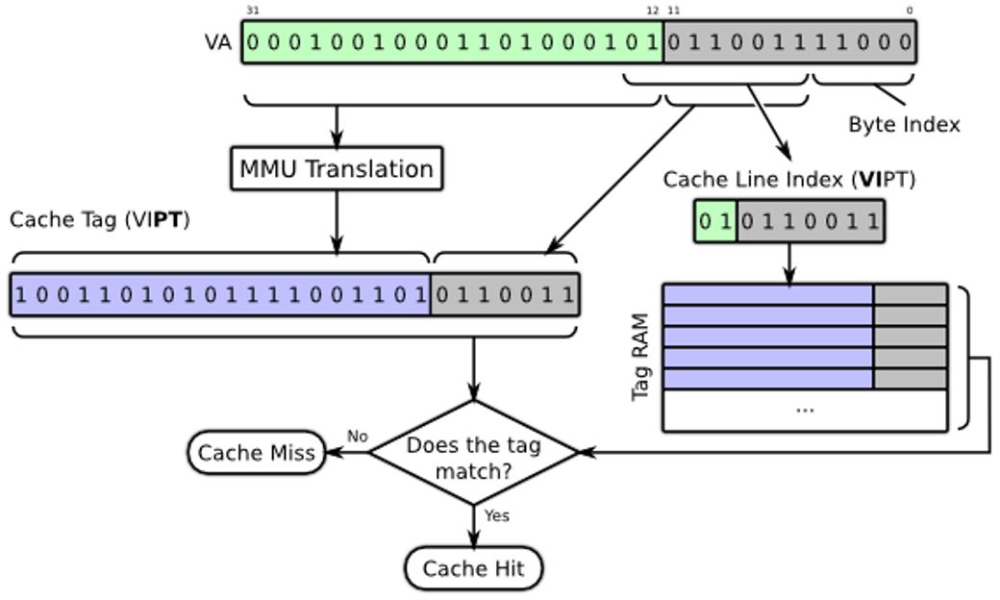

public: True class: center, middle # 虚拟存储管理 蒋炎岩 <jyy@nju.edu.cn> 南京大学计算机软件研究所 --- # 概述 存储器体系结构 * 在C语言里，是没有“存储器体系结构”的概念的：整个内存就是一个大数组 * 如何编出对存储器体系结构友好的程序？ ---- 虚拟存储 * 分页是怎么来的？ * 分页除了能让每个进程都有自己的地址空间，还有什么好处？ --- class: center, middle # 存储器体系结构 --- # 存储器的难题 目前计算机系统通常使用线性地址的模型 (人容易理解) * 所有存储单元按从小到大编号 (地址) * 代码、数据、堆栈都在同一地址空间 ---- 但物理上的存储器要复杂得多： * 快的存储器做不大，还贵；慢的存储器可以很大很便宜 * 寄存器 → 缓存 (L1/L2/L3) → 内存 (C语言可见) → 磁盘 --- # 思考题 .red[为什么需要寄存器]？ * 寄存器难道不是完全没用的东西吗？ * 给每个寄存器一个.red[内存地址]不就完事了？ -- count: false ---- 因为内存地址浪费啊！ * RAM machine (每次都需要多个地址计算；指令会更长；中间结果也必须写回内存) * Stack machine (相当于移位寄存器) 当然了，properly designed ISA没有寄存器应该是没有任何问题的 --- # 第1层：寄存器 寄存器其实是一个.green[地址空间非常小]的内存 * 5bit → 32个寄存器 * 6bit → 64个寄存器 * 因此寻址通常是非常快的 ---- 正是因为非常小，处理器在运行的时候可以创造多个“副本” * 乱序执行 * 投机执行 * …… --- # 第2层：缓存 核心是Locality of References，“局部性原理” > A phenomenon in which the same values, or related [storage](https://en.wikipedia.org/wiki/Computer_storage) locations, are frequently accessed, depending on the [memory access pattern](https://en.wikipedia.org/wiki/Memory_access_pattern). ---- 从另一个角度，根据内存访问的历史，通常能较为准确地.red[预测]未来可能访问的内存，并且访问.red[临近]内存居多 * 缓存对寄存器是完全透明的(吗？) --- # 第3层：内存 [内存 DRAM](http://www.qdpma.com/ServerSystems/DRAM.html) 即一个大数组。虽然是RAM (Random Access Memory)，但顺序读写还是比随机读写快很多 .center[] --- # 第4层：外部存储器 .float-right[] 更大、更便宜，更……复杂…… * NVM/Flash都是非常复杂的系统 * 速度很高、有一定延迟、读/写不对称 --- class: middle, center # 存储器体系结构与编程 --- # 内存访问模式分析 分析以下程序/算法实现访问内存的模式，以及缓存对这些程序的运行时间有怎样的影响 1. memcpy 2. NEMU 3. 快速排序 4. 堆排序 5. Bellman-Ford/Dijsktra --- # 例子：矩阵转置 矩阵是个非常麻烦的东西： * 按行优先存储，按列访问不连续 * 按列优先存储，按行访问不连续 要.red[同时按行/按列访问]怎么办？ ```c for (int i = 0; i < n; i++) { for (int j = 0; j < n; j++) { A[i][j] = B[j][i]; } } ``` - 缓存缺失 - 缓存按缓存线访问，如果一个缓存线只用其中一小部分就被换出，则造成带宽浪费 --- # 例子：矩阵乘法 ```c for (int i = 0; i < n; i++) { for (int j = 0; j < n; j++) { double s = 0; for (int k = 0; k < n; k++) { s += A[i][k] * B[k][j]; } C[i][j] = s; } ``` --- # 其他使用局部性的技巧 * Array merging ```c double a[N]; double b[N]; // JSOI历史上发生过这种惨案 ==> struct { double a, double b; } ab[N]; ``` * Array transpose ```c double a[M][N]; // ==> double a[M][N]; // 课本例子 ``` * Data copying * 矩阵乘法，得到<math>B^T</math>，之后所有向量都有内存局部性 --- class: center, middle # 虚拟存储 --- # 地址翻译的数据结构 所谓虚存，就是一个.green[硬件]维护的数据结构，它能在运行时把一个地址 <math>x</math> 映射到 <math>M(x)</math>，仅此而已 * 这个数据结构一般程序无权修改 * 访问未映射的内存产生异常 (Segmentation Fault) * 能够控制读/写/执行权限 * read-execute (代码) * read-write (数据/堆) * read-write-execute (数据/堆，可配置) * read-write (栈) --- # 地址翻译的实现 实现数据结构好办，就是个`map<uintptr_t,uintptr_t>`嘛 * .red[查询/修改速度要快]，最好 <math>O(1)</math> * .red[空间消耗要少] (`map`消耗 <math>c\cdot n</math> 的内存, <math>c>1</math>) ---- 我们的老朋友：局部性 * 内存是.red[连续]排布的：代码、数据、堆栈…… * 而且访问也是局部的 (可以临时把一些页面从主存换到磁盘，虽然现在不怎么需要这个了……) * 因此可以按.red[页面] (4KB, 4MB, …)来分配和管理内存 --- # 地址翻译：普通实现 4GB/4KB = 1024 * 1024页，那就实现成一个2层的1024叉树 .center[] 可以通过增加树的深度支持更大的内存(保持4KB页) * PAE (3级页表), PML4 (4级页表), PML5 (5级页表) --- # 地址翻译：文艺实现 ---- 非常聪明的实现：维护一张.red[线性表]，每一项都是 * <math>(L, R, B)</math>: <math>\forall x\in [L, R), M(L + x) = B + x</math> * 在每次内存访问时由硬件负责查表；如果遇到查找失败，处理器异常，由操作系统重填这个表 (这样就可以实现任意的映射了) ---- 这是一个.red[可编程]的MMU * 非常灵活，可以实现任意页表 * 但TLB miss重填相对较慢 --- # 地址翻译：二逼实现 反正是个 <math>x \to M(x)</math> 的映射，我们直接用Hashing维护不就好了？ -- count: false * 只要系统里所有进程都.red[ASLR]，这真的是一个非常棒的方案！ .center[] > J Huck, J Hays. Architectural support for translation table management in large address space machines. In *Proc. of ISCA*, 1993. --- # 实现：真正的麻烦…… 缓存到底是虚拟地址，还是物理地址？ * 缓存虚拟地址：每次切换 <math>M</math> 都要清空缓存 * 缓存物理地址：每次都要等地址翻译做完 ---- 更大的麻烦： * <math>M</math> 允许多个虚拟页映射到同一个物理页 (aliasing problem) * 如果缓存虚拟地址……咋办？ → 去整个缓存里比一圈物理地址 --- # VIPT VIPT = Virtually Indexed, Physically Tagged，各做一半 (armv6) * 页面越大，VIPT就越容易，否则还是需要解决aliasing .center[]